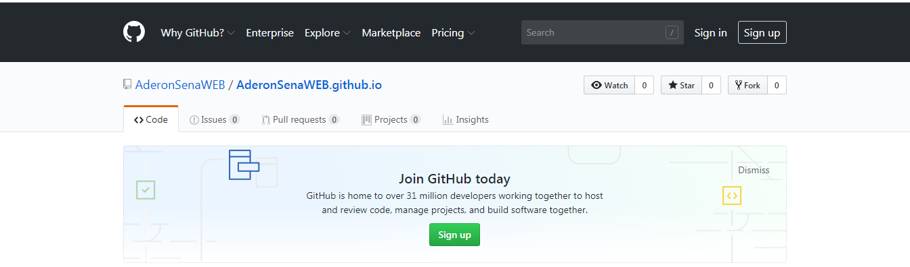

Desenvolvimento web é o termo utilizado para descrever o desenvolvimento de sites, na Internet ou numa intranet. Este é o profissional que trabalha desenvolvendo websites, podendo ser um Web Designer (Desenvolvedor do Layout), ou Web Developer(Desenvolvedor de sistemas). O desenvolvimento refere-se a um processo de construção e testes do software especifico para a web, com a finalidade de se obter um conjunto de programas, que satisfazem as funções pretendidas, quer em termos de usabilidade dos usuários ou compatibilidade com outros programas existentes. O desenvolvimento web pode variar desde simples páginas estáticas a aplicações ricas, comércios eletrônicos ou redes sociais.Home
Sou discente do Curso de licenciatura em Informática e as tividade e exercicio das aulas aqui postadas tiveram como fonte de pesquisa materiais das aulas e sites os seguintes sites especializados. Aulas foram distribuidas em HTML5, em HTML5 com CSS, framework BOOTSTRAP e a biblioteca JQUERY.
https://www.devmedia.com.br
https://www.w3schools.com
https://www.w3.org
https://www.maujor.com
|  |
|---|